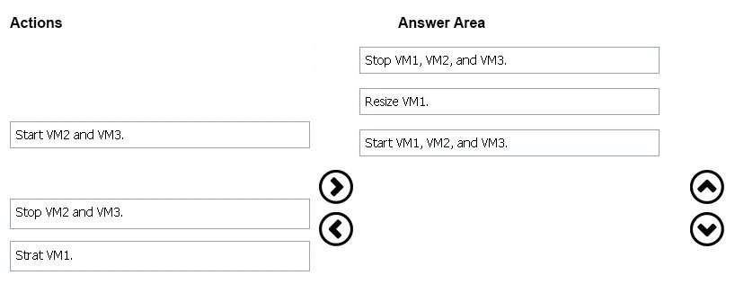

Correct Answer:

Step 1: Stop VM1, VM, and VM3.
If the VM you wish to resize is part of an availability set, then you must stop all VMs in the availability set before changing the size of any VM in the availability set. The reason all VMs in the availability set must be stopped before performing the resize operation to a size that requires different hardware is that all running
VMs in the availability set must be using the same physical hardware cluster. Therefore, if a change of physical hardware cluster is required to change the VM size then all VMs must be first stopped and then restarted one-by-one to a different physical hardware clusters.
Step 2: Resize VM1.
Step 3: Start VM1, VM2, and VM3.
References:
https://azure.microsoft.com/es-es/blog/resize-virtual-machines/